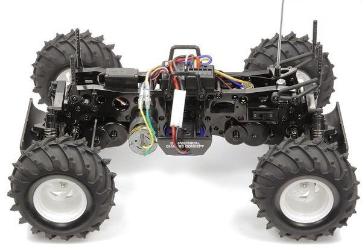

タミヤ WR-01

引用元画像：タミヤ公式サイト
📋 基本情報
| メーカー | タミヤ（Tamiya） |
|---|---|
| 機種名 | WR-01 |
| 型番 | 58231（ワイルドダガー） |
| 発売時期 | 1999年2月24日 |
| 価格 | 情報不明 |
| 生産状況 | 生産終了 |
| カテゴリー | ラジコンカー（1/10スケール 電動RCカー） |
| サブカテゴリー | モンスタートラック（オフロード） |
📏 シャーシスペック
| 全長 | 510mm |
|---|---|
| 全幅 | 385mm |
| 全高 | 297mm |
| 全備重量 | 5,010g（RCメカ・バッテリー搭載時） |
| ホイールベース | 330mm |
| トレッド | 前後とも280mm |
| タイヤ幅/径 | 前後とも106/165mm |
| フレーム | アルミ製ラダーフレーム |
⚙️ 駆動系
| 駆動方式 | シャフトドライブ4WD |
|---|---|
| デフギヤ | 前後とも3ベベルデフ |
| ギヤ比 | 34:1 |
| モーター | 540タイプ2個（ツインモーター） |
| スピードコントローラー | 3段変速スイッチ |
🔧 サスペンション
| 形式 | 前後とも4リンクリジッド |
|---|---|
| ダンパー | CVAオイルダンパー（カンチレバー式） |
| ステアリング | 2分割タイロッド式 |
💡 特徴
ツインモーター4WDの迫力
- 並列配置のツインモーター（540タイプ2個）搭載
- センタートランスファーからプロペラシャフトで前後アクスルに動力伝達
- 圧倒的なパワーでモンスタートラックの走りを再現
カンチレバー式サスペンション
- プッシュロッドとロッキングアームでダンパーを作動
- 4本のオイルダンパーをメインフレーム上部に縦置き搭載
- 桁外れのサスストロークと驚異的な悪路走破性
高剛性シャーシ
- アルミ製ラダーフレーム採用
- サイドフレームとサスアームにアルミ材使用
- 金属部品を多用した実車モンスタートラックのメカニズム再現
大径タイヤ装備
- 直径165mmの大径ラグパターンタイヤ
- クラッドバスターと同サイズのV型ラグパターン
🔧 ぽすとそに工房での修理実績
修理難易度
★★★★★（かなり古いシャーシなので、パーツが見つからない可能性もあります。）
よくある故障・注意点
- ツインモーター構造のため、モーターやギヤボックスの整備が複雑
- アルミパーツの経年劣化や破損
- カンチレバー式サスペンションの調整難易度が高い
- パーツ入手が困難（生産終了から25年以上経過）
修理のポイント
- オービタルギヤデフの点検と整備
- アルミパーツの亀裂や破損チェック
- カンチレバー式サスペンションの動作確認
- ツインモーターの同期調整
その他の特徴
- アメリカで人気のスピード競技用モンスタートラックをモデル化
- フイニッシュボディとスペア用クリアボディが同梱
- 当時のフラグシップモデル